Through The Lens
Through The Lens es un espacio dedicado a la fotografía como herramienta de comunicación visual. A través de las categorías de alimentos y bebidas, fotografía de producto y producto con modelo, este blog presenta una colección de imágenes que destacan la creatividad, la técnica y el poder de contar historias mediante la luz, la composición y el encuadre.
Alimentos &
Bebidas
Esta categoría reúne una variedad de propuestas gastronómicas que destacan por su presentación, sabor y personalidad. A través de diferentes preparaciones, se busca mostrar la diversidad y el atractivo visual que caracterizan al mundo de los alimentos y las bebidas.
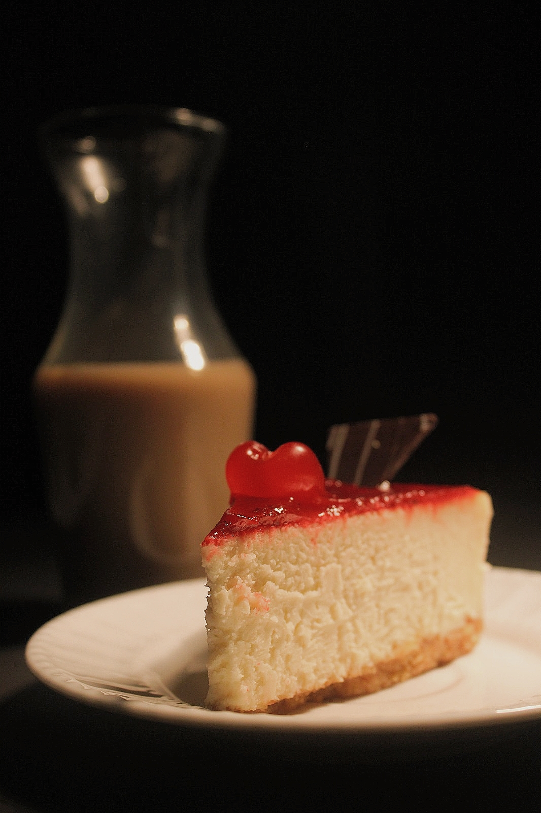
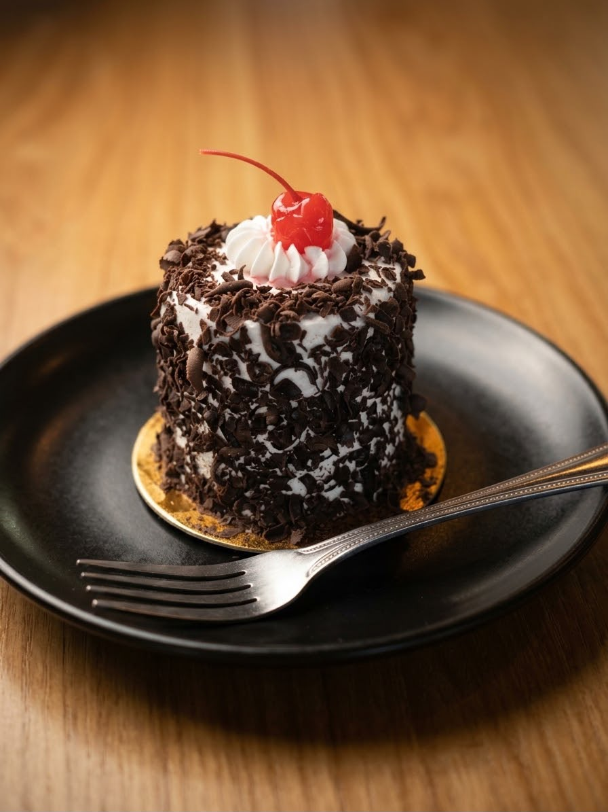
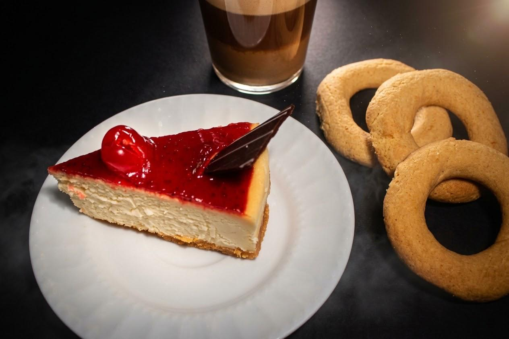
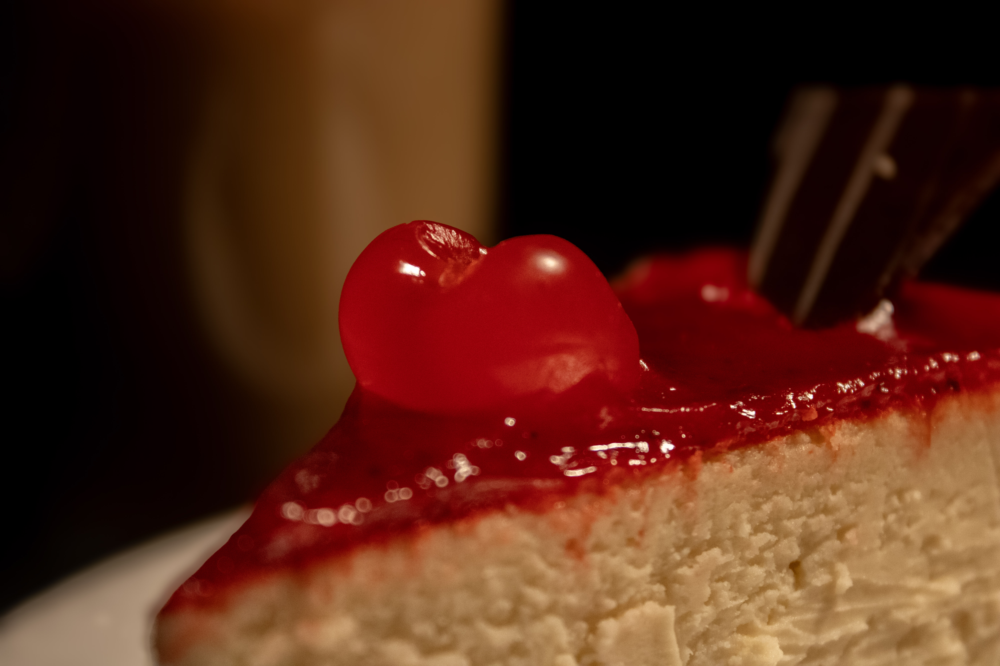
Fotografía de
Producto
Esta colección presenta una línea de cuidado corporal enriquecida con vitamina C, diseñada para aportar luminosidad e hidratación a la piel. Las imágenes muestran la variedad de productos que conforman la línea, destacando su presentación, consistencia y propuesta de bienestar dentro de una misma identidad de marca.
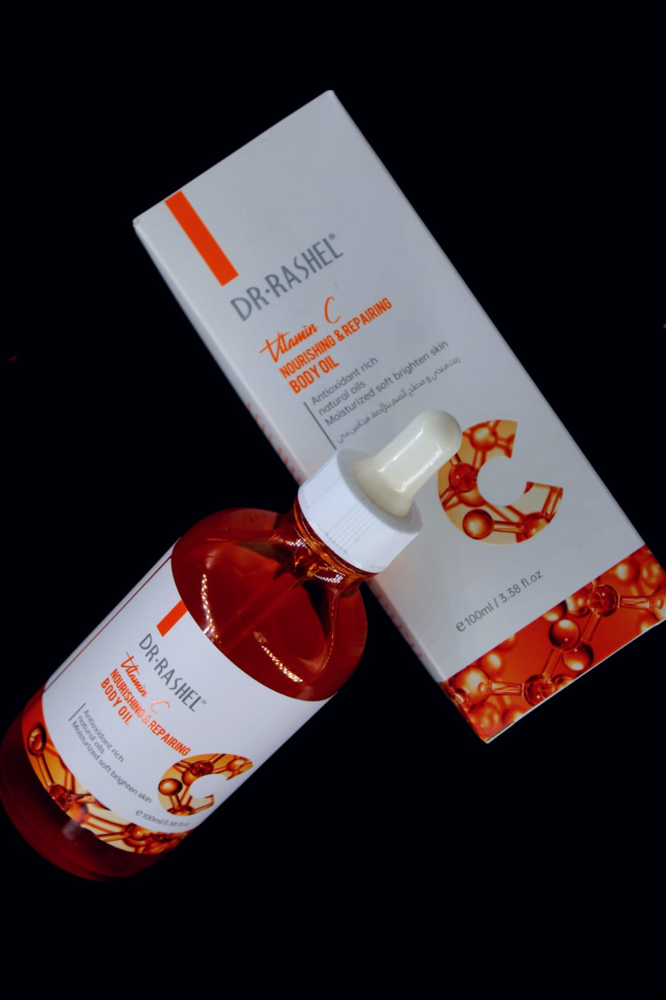
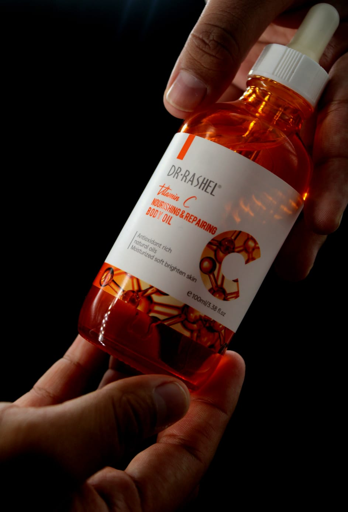
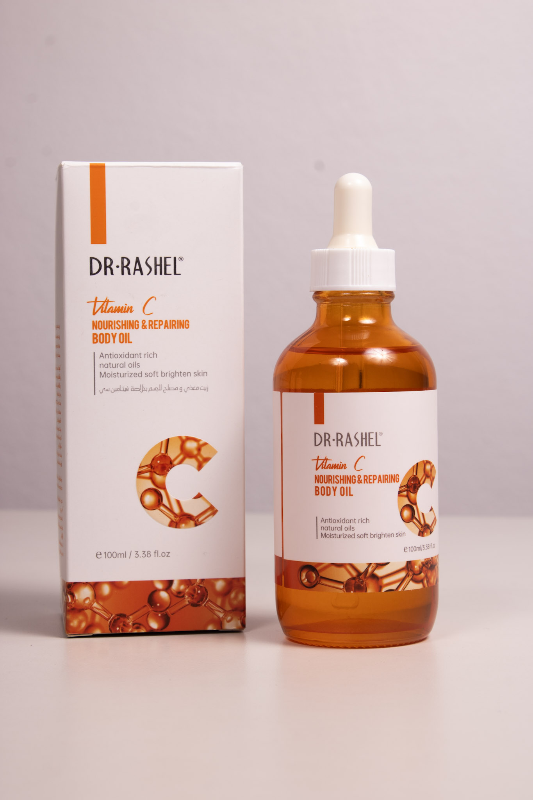
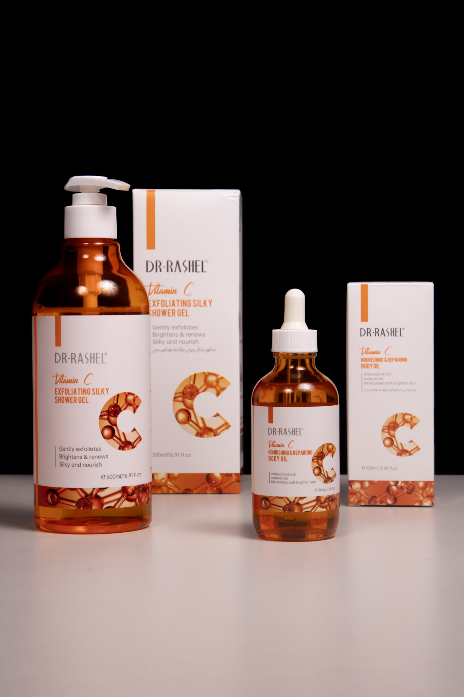
Producto con
Modelo
Esta categoría presenta un producto en interacción con un modelo, mostrando su uso dentro de un contexto real. La presencia humana aporta cercanía y permite comunicar de manera más efectiva la experiencia, el propósito y la identidad del producto.
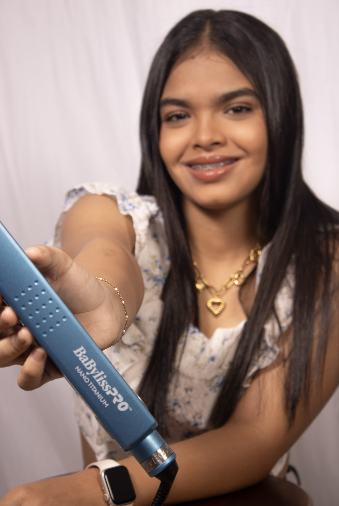
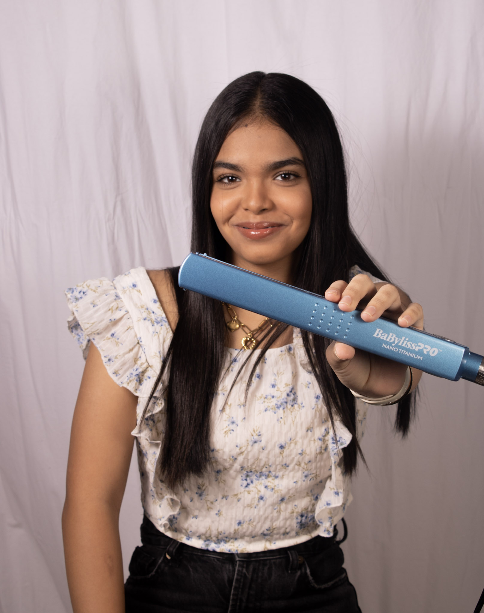
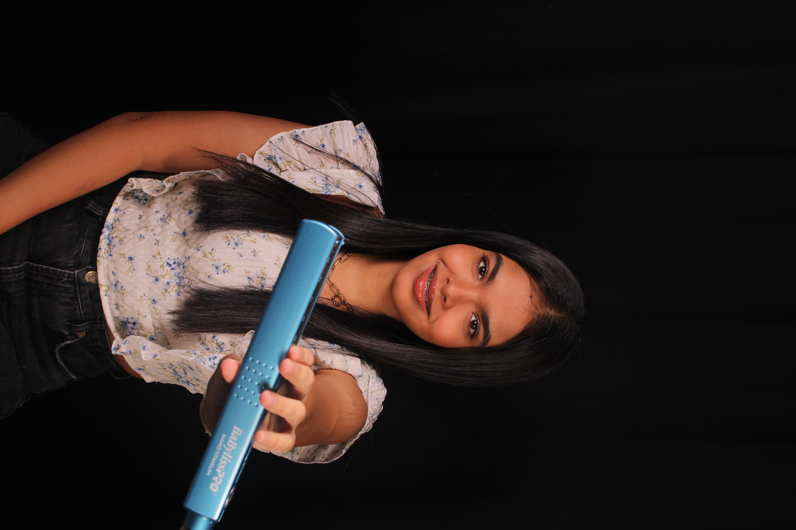
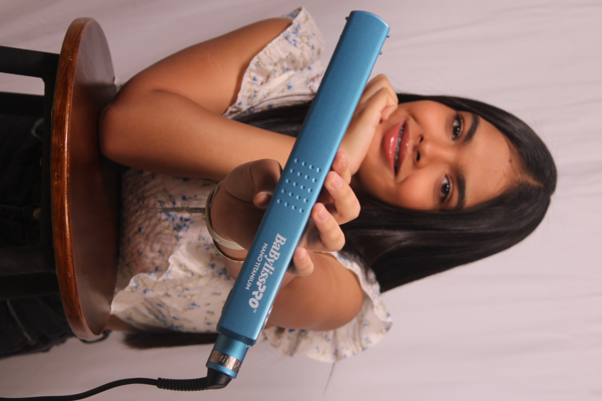